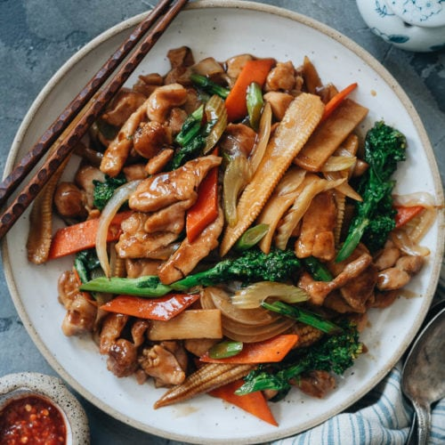

Other Recipes!
Chop Suey

Description
Chop suey is a dish in American Chinese cuisine and other forms of overseas
Chinese cuisine, consisting of meat and eggs, cooked quickly with vegetables
such as bean sprouts, cabbage, and celery and bound in a starch-thickened sauce.
Ingredients
Optional Tenderised Chicken (Note 1):
- 180g (6oz ) chicken breast , thinly sliced
- 1/2 tsp baking soda / bi-carb (optional, Note 1)
Sauce (Or Use Charlie, Note 2):
- 1 tbsp cornflour / corn starch
- 1 1/2 tbsp light soy sauce , or all purpose soy(Note 3)
- 1 tbsp Oyster Sauce (Note 4)
- 1 tbsp Chinese Cooking Wine OR Mirin (Note 5)
- 1/2 tsp sesame oil (optional)
- Dash of white pepper (or black)
- 3/4 cup (185 ml) water
Stir Fry:
- 1 1/2 tbsp vegetable oil (or other cooking oil)
- 2 garlic cloves , finely chopped
- 1/2 onion , sliced (white, brown, yellow)
- 5 - 6 stems choy sum (or other Asian greens)
- 1 medium carrot
- 1/2 cup sliced mushrooms (shiitake is authentic, but any will do)
- 1 cup bean sprouts
Directions:
"VELVET" CHICKEN (OPTIONAL, NOTE 1)
-
Place chicken in a bowl, sprinkle over baking
soda. Use your fingers to mix then set aside for
20 minutes, no longer than 30 minutes (can get
too tender). Rinse well, pat excess water with
paper towels, set aside
PREP INGREDIENTS:
-
Sauce: Place cornflour and soy sauce in a bowl. Mix until lump free. Then add remaining Sauce ingredients and stir.
-
Chop choy sum: Trim end off choy sum. Then cut into 7cm (3") pieces. Separate stems from leaves.
-
Chop carrot - Peel then cut into 3cm (1.3") pieces. Then slice the pieces thinly.
STIR FRY:
-
Heat oil in a wok or skillet over high heat. Add garlic, stir quickly, then add onion, Cook for 1 minute, moving constantly, until onion is starting to wilt.
-
Add chicken, cook for 1 minute until the surface changes from pink to white.
-
Add choy sum stems, carrot and mushrooms. Stir fry for 1 minute.
-
Add choy sum leaves, bean sprouts and Sauce. Stir fry for 1 to 2 minutes until the Sauce thickens to a thick syrup consistency. Vegetables should still be tender/crisp, not soggy and soft.
-
Serve immediately with rice (for low carb, low cal option, try Cauliflower Rice!)
Try out one of our other recipes!